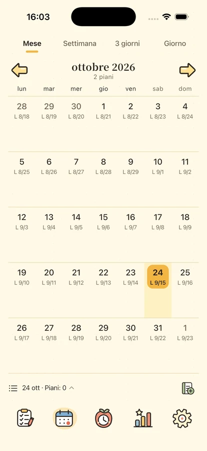
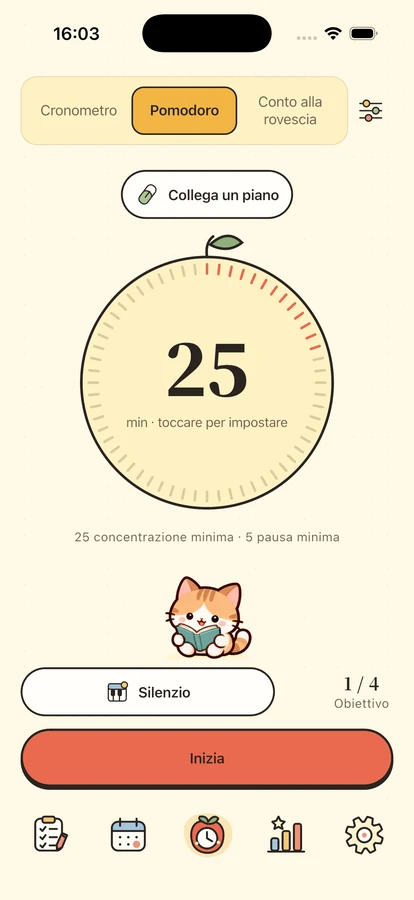
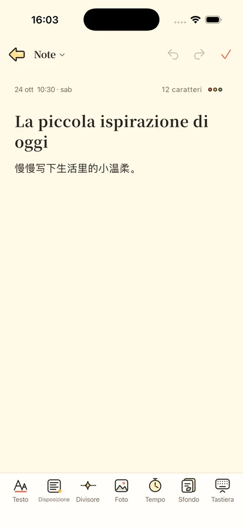

Un po’ di calma.
Un po’ di compagnia.
Fai spazio a ciò che conta. Organizza i piani in quattro quadranti, dedicati a una cosa alla volta e conserva pensieri e date importanti.
Per iPhone e iPad · In preparazione al lancio

Una cosa alla volta.
Inizia da una piccola cosa
Uno spazio per i tuoi piani, il tuo tempo e un po’ di incoraggiamento.

Ogni piano al suo posto.
Distingui importanza e urgenza con quattro quadranti. Esplora giorno, settimana e mese nella cronologia e nel calendario, con ricorrenze, sottoattività, categorie e promemoria locali. Salva i tuoi modelli: due gratis, fino a cinquanta con Plus.
Tempo per ciò che hai davanti.
Scegli pomodoro, conto alla rovescia o cronometro, con 8 brani strumentali e 11 suoni ambientali offline. Quattro compagni e un orologio sfogliabile ti accompagnano. Un brano, un suono ambientale e il silenzio restano gratuiti. La libreria completa, i temi avanzati e gli approfondimenti richiedono Plus o la prova di tre giorni. Plus: Stili orologio Plus · Stili widget Plus · Approfondimenti · Modelli di piano · Backup automatico · Cronologia backup.



Tieni vicini i ricordi.
Note con formattazione, foto e carte decorative, da ritrovare per data o categoria. Ricorda compleanni e anniversari. Su iOS 17 o successivo, aggiungi widget per piani, calendario, concentrazione, date e note; gli stili avanzati richiedono Plus.
La tua quotidianità appartiene a te.
Usa le funzioni locali senza accedere. Scegli se attivare i backup cloud. L’analisi di utilizzo è disattivata per impostazione predefinita. Puoi esportare i contenuti, gestire la privacy ed eliminare l’account.
Come vengono trattati i dati